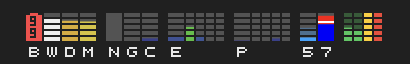

The paid app built on cpuTopBars. Everything cpuTopBars shows, plus bars for your AI coding plan's usage limits and each live session, your network addresses in the menu, and a way to keep your Mac awake while a job runs. If you keep the macOS Battery and Wi-Fi menu-bar items only to check their status, its battery and Wi-Fi bars can stand in for them (without their controls), so you can hide those and free up space in your menu bar.
Free beta · open the link on your Mac · installs through Apple’s TestFlight app
A real capture of the menu bar. After cpuTopBars' own bars come the plan's two limits, lettered 5 and 7, then one bar for each session.

Rest the pointer on a bar for a second and its reading appears below the menu bar, as in cpuTopBars. The panels were captured in devTopBars, the labels below in cpuTopBars built from source.
![Three panels side by side: devTopBars Settings with a live demo of the graph, refresh rate, number of processes, switches for each group of bars and the usage bars' settings; a readings panel with uptime, battery, Wi-Fi, disk, memory, Neural Engine, GPU and CPU, then the AI limits and the AI sessions, one session highlighted; and the menu listing your top processes by CPU with their memory, then Activity Monitor, Freeze, Settings, How to Read the Menu Bar and About, then the LAN IP (blacked out), WAN IP and VPN IP rows](../cputopbars/media/settings-readings-processes2.png)
devTopBars works like cpuTopBars from the App Store: its menu lists your own processes and counts the others in one row, the GPU shows its use without watts, and the Neural Engine shows as on or off. Its menu also adds the LAN, WAN and VPN rows.


devTopBars works with Claude Code. It shows the 5-hour and weekly usage limits of your Claude Pro or Max plan, and each running Claude Code session, in your Mac's menu bar. The Claude Code bars need the free usage-feed plugin, installed once in Claude Code. devTopBars is made by Halfmarble LLC and is not affiliated with, sponsored by or endorsed by Anthropic. Claude and Claude Code are trademarks of Anthropic.
The plugin is open source, at github.com/halfmarble/mods. It hands each session's figures to devTopBars over a socket on your Mac. devTopBars opens none of your coding tool's files and logs nothing it receives.
Hover a bar for its summary, or open the menu for a panel with each session's state. For a session running in Terminal, click its row and its tab comes to the front.
Your Mac's address on the local network and the one your VPN gave it, read on the Mac. The public WAN address is looked up only when you click its row.
From the process inspector, keep the Mac from sleeping while a chosen process runs, such as a long build or a download.
Kill one of your processes through a Shortcut you add once, or copy its name and open Activity Monitor. The App Store sandbox lets no app end other processes itself.
If you keep the Battery and Wi-Fi items only to check their status, these bars can take their place. They have none of those items' controls, and they do not show the network's name.
The live graph of CPU, cores, GPU, Neural Engine, memory, disk, battery and Wi-Fi, the top-process menu, the readings panel and the hover labels. See them →
macOS 27 or later. The usage bars also need the free usage-feed plugin, installed once in Claude Code; the app's setup window gives the line to type.
cpuTopBars is free and open source (MIT): the same menu-bar graph, top processes and readings, without the usage bars, address rows or keep-awake. See cpuTopBars →
devTopBars sends no session data and no user data anywhere. It makes two kinds of request, and only these; each service it asks sees your Mac's address, as any web request does:
The WAN lookup, only when you click its row: one question to ipify, which answers with the address the internet sees for your Mac.
One check per launch for a newer version of the usage-feed plugin: a request for one public file on GitHub, which sends no user data. Turn off the check or the usage bars in Settings and devTopBars makes no such request.
No accounts, no analytics, no third-party SDKs. See halfmarble's Glass Box data philosophy.
5% of software net profits pledged:
2.5% to Team Fox, the grassroots fundraising program of The Michael J. Fox Foundation
2.5% to Public Health Collaboration (PHC)
halfmarble is an independent Team Fox third-party fundraiser.